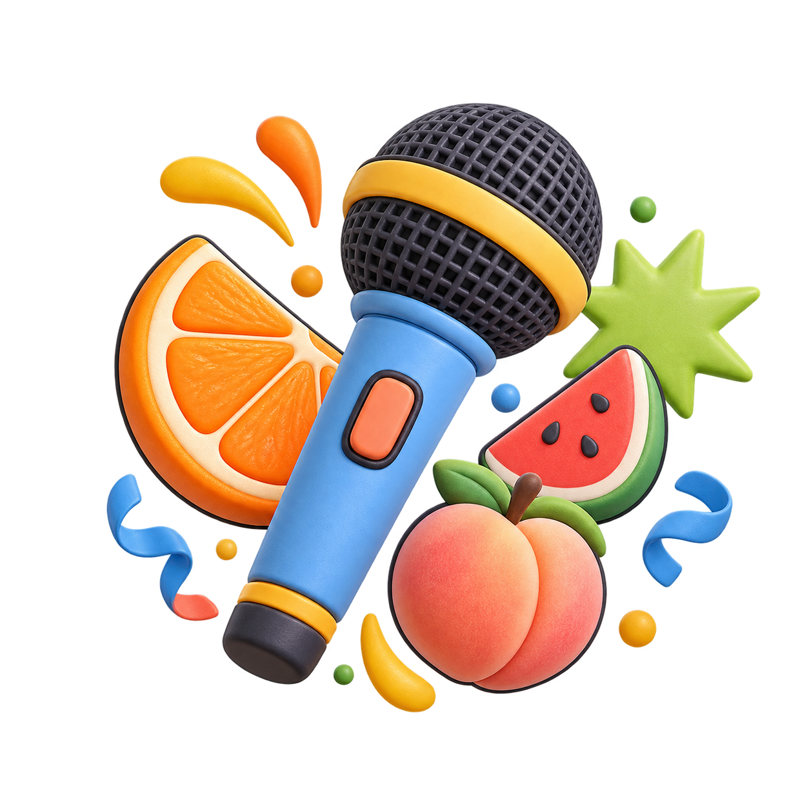
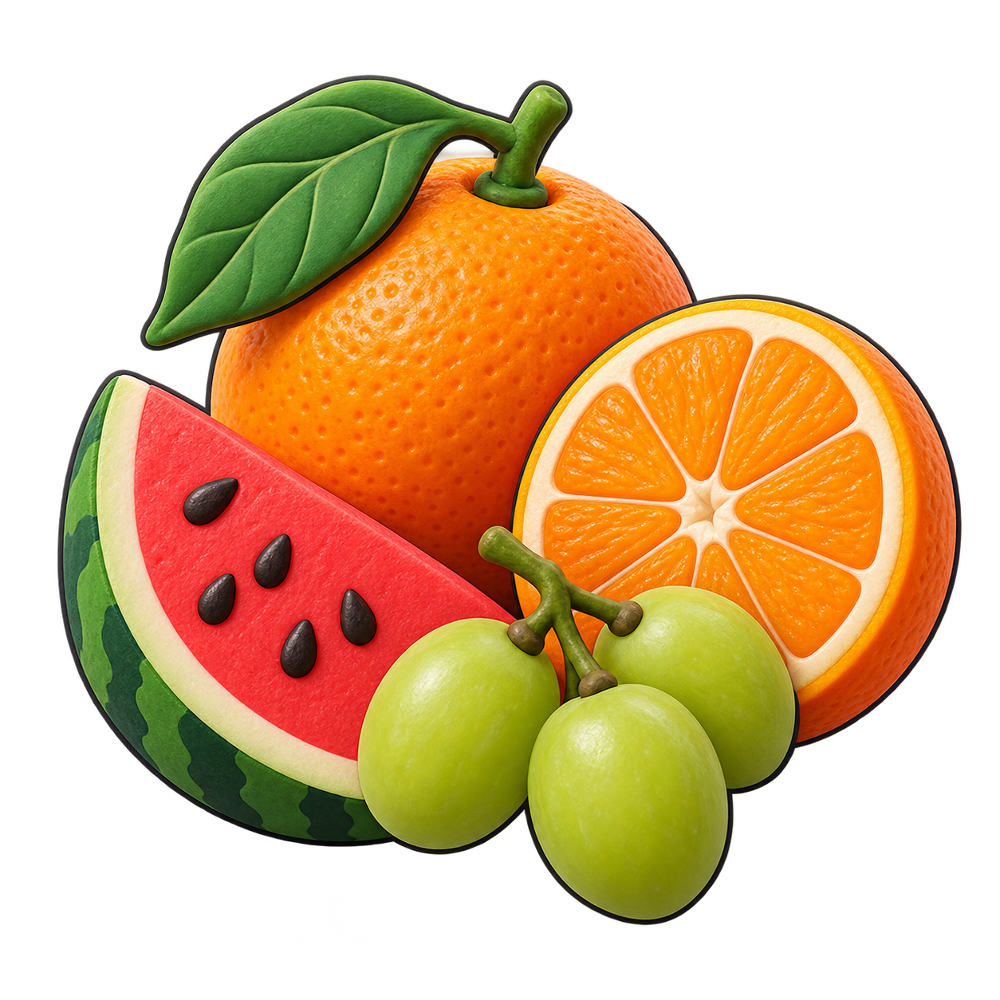
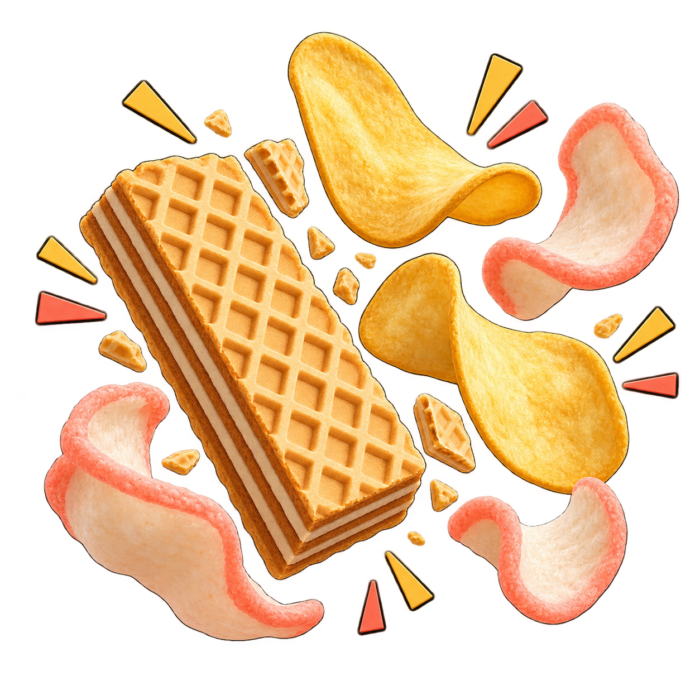
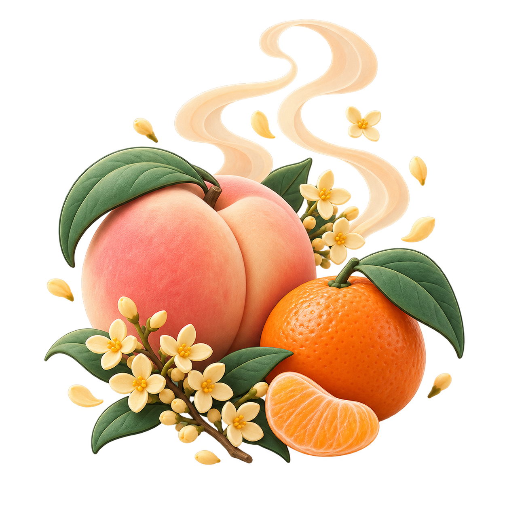
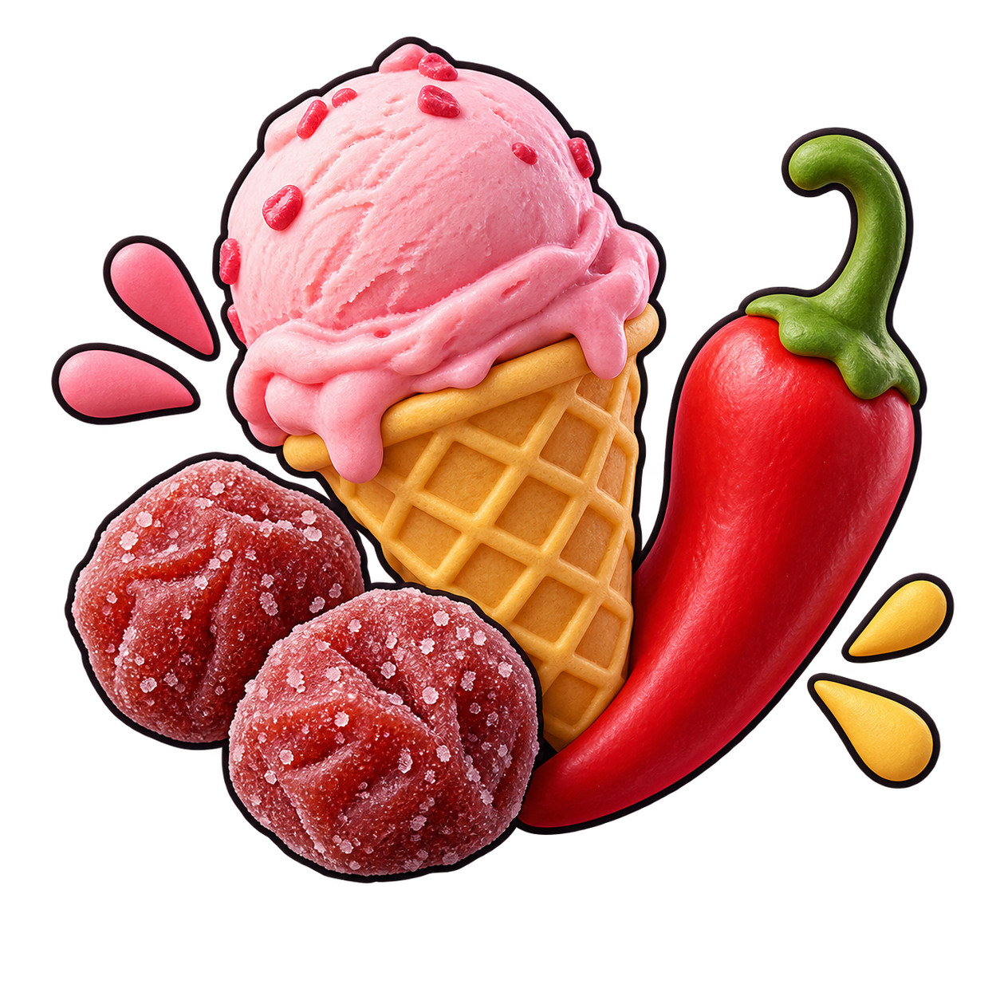
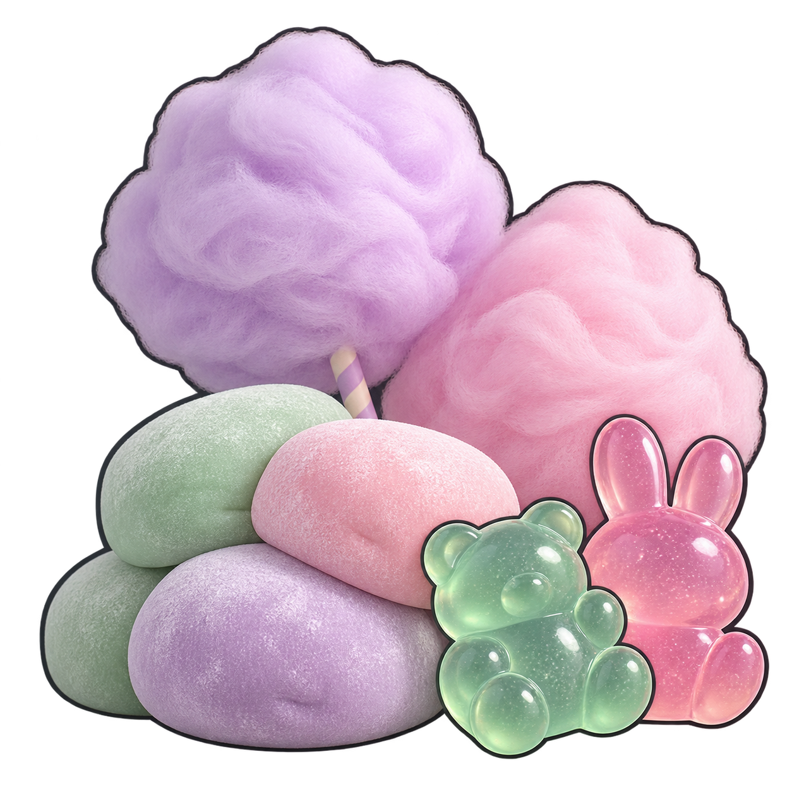

打开感官
享受极致
边吃边聊，也把好点子带走。
今天，尽管开麦！

✳60 分钟一点好奇心，一起玩。
这一小时，怎么玩？
0113′
先热个场
短片、回顾，再聊两句
0212′
感官开机
五种体验，边吃边想
0328′
好案例开麦
两位分享，现场提问与交流
047′
开心收尾
自由问答、奖励、合影
先看一段，
再聊两句。
你觉得，什么样的小事
算“极致”？
▶ 打开开场视频 ↗
点击跳转飞书 · 看完返回演示稿
极致，来到第五季。
从「向前一步」到「打开感官」，每一季都在多做一点。
2022.06—2023.03起点
向前一步
从多走一步开始
2024.07—11第一季想不一样
想不一样
做不一样
聚焦新的想法与行动
2025.01—04第二季以小见大
以小见大
发现极致
从小事里发现改进空间
2025.07—11第三季高质迭代
高质迭代
极致生长
持续迭代，让好做法生长
2026.03—06第四季AI 无限
AI 无限
极致无限
让创新走进工作现场
2026.08—10正在进行 · 第五季打开感官
打开感官
享受极致
今天，一起看见更多可能
👀多看一步
看见自己手上的事
也看见下一环节需要什么
💡多想一步
问题在自己这里发现
就尽量在这里解决
每个环节多留意一点，下一环节就能走得更顺。
麦克风，
先交给你。
哪件小事，让你觉得
“再做好一点”真的有用？
第一眼，就选它！
先挑一个
最抢眼的。
颜色？形状？还是一个小细节？
你先注意到了什么？
亮色食物组

橙子、青提
小番茄、西瓜
这一口，自带音效。
咔嚓！
谁的声音最脆？
闭上眼听一听。
同样是“脆”，真的一样吗？
脆脆食物组

酥脆薄饼、脆薯
薯条、虾片
还没入口，已经发现了。
香气先来
打个招呼。
靠近一点，猜猜是什么？
你捕捉到了什么信号？
香气食物组

桂花／蜜桃糕点
橙子、橘子
甜的？酸的？辣的？凉的？
这一口，
是什么心情？
哪一种最像今天的你？
同一口食物，大家感受一样吗？
味道鲜明组

甜点、少量话梅
辣卤、雪糕
有些体验，一下就记住了。
软软弹弹，
体验一下。
哪种口感最让你记住？
用一个词形容它。
特别触感组

麻薯、棉花糖
Q弹软糖
好案例，
轮到你上场。
01
发现了
什么问题？
02
你多做了
哪一步？
03
后来有了
什么变化？
04
大家可以
借鉴什么？
新机产品趣味
问答测试卷
与情景化提效
今天的麦主：胡赛兰
哪些产品知识，最容易记混？
哪些真实情景，最值得练一遍？
学会了，还要用得上01
机器人话术
去 AI 味
的三步迭代
今天的麦主：郑乐乐
哪句话，让你觉得“太像机器人”？
三步迭代后，体验有什么变化？
这句话，像人说的！02
👏这两个案例，
这两个案例，
哪里对你最有用？
说一个你想带回工作里试试的做法。
01胡赛兰
新机产品趣味问答测试卷
与情景化提效
02郑乐乐
机器人话术去 AI 味的
三步迭代
随便挑一题，
我们聊点真的。
点一张题卡，麦克风就是你的。
极致，是愿意把
手上的事
再做好一点。
✳领奖 & 合影
好点子带走，开心也带走。
#极致开放麦 #打开感官享受极致
回到工作里